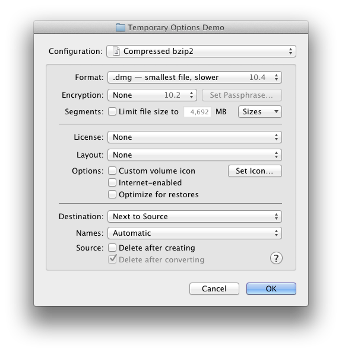

When DropDMG is creating or converting a disk image, it uses the options specified in the current configuration. If you want to use slightly different options, you could go to the Configurations preferences, duplicate the configuration, change it, make your image, and then delete the configuration. However, it’s much easier to use temporary options. This lets you start with a configuration, make some one-off changes, and then create your disk image without altering any of the saved configurations.
You can also use the DropDMG: Ask for Options command in the Services menu to create a disk image using temporary options.
